Milestone 4
Milestone 4.1: Active Directory LDAPs SSO Provider
Active Directory LDAPs SSO Provider
Install-WindowsFeature Adcs-Cert-Authority -IncludeManagementTools
Install-AdcsCertificationAuthority -CAType EnterpriseRootCa -CryptoProviderName "RSA#Microsoft Software Key Storage Provider" -KeyLength 2048 -HashAlgorithmName SHA1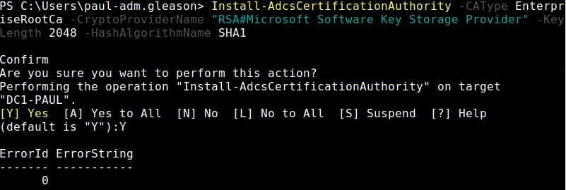
Copy CA Cert
openssl s_client -connect dc1-paul:636 -showcerts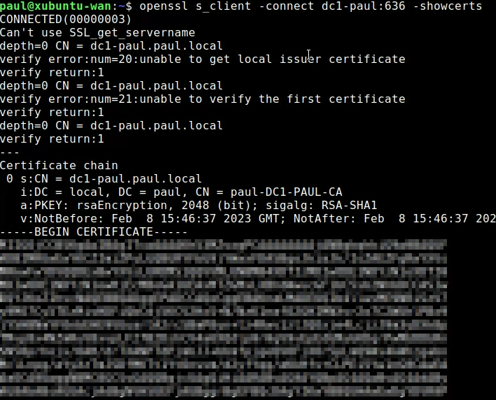
Copy Cert and past in a file called ca.pem
Connect AD to vSphere
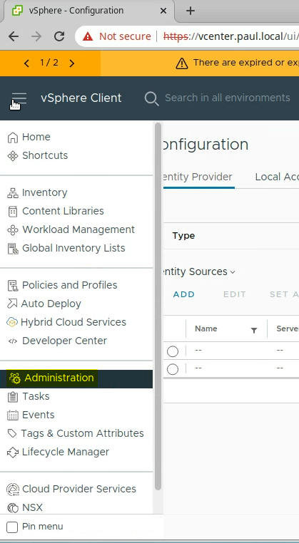
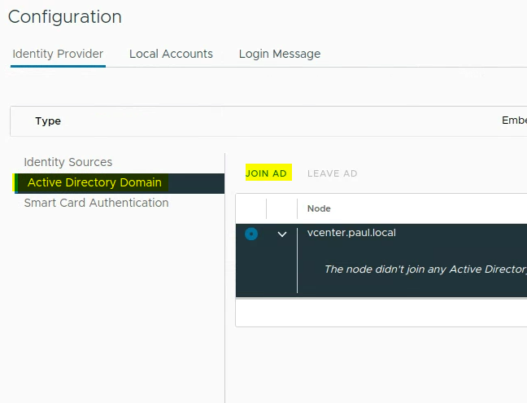
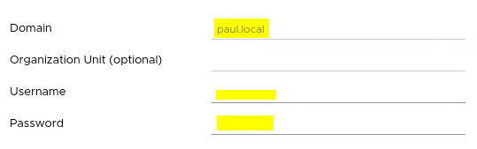
Reboot vSphere
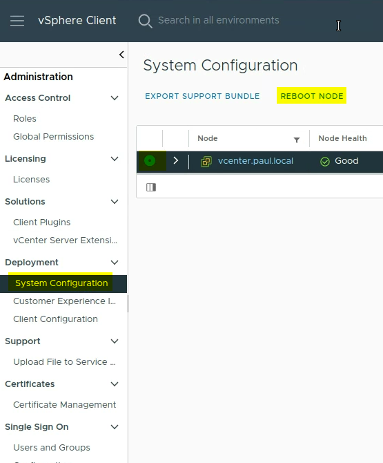
Change Identity provider
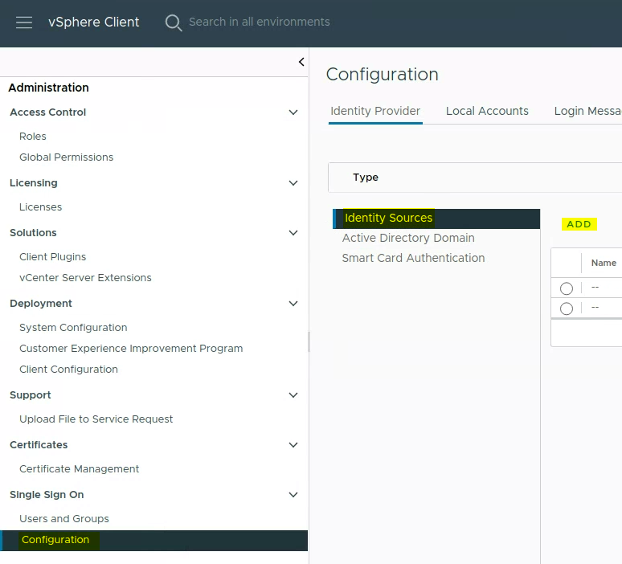
Add Identity Source
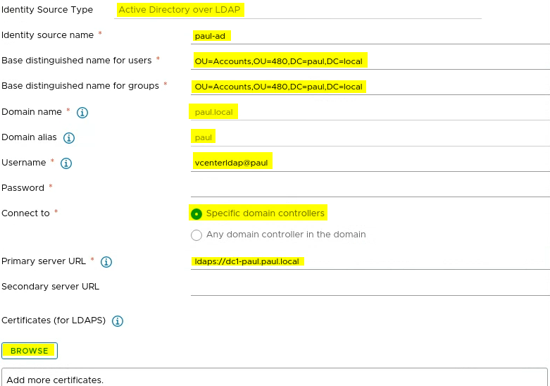
Create ldap users
New-ADOrganizationalUnit -Name "480" -Path "DC=paul,DC=local"
New-ADOrganizationalUnit -Name "Accounts" -Path "OU=480,DC=paul,DC=local"
New-ADOrganizationalUnit -Name "ServiceAccounts" -Path "OU=AccountsOU=480,DC=paul,DC=local"
New-ADUser -Name "vcenterldap" -Accountpassword (Read-Host -AsSecureString "AccountPassword") -path "OU=ServiceAccounts,OU=AccountsOU=480,DC=paul,DC=local" -Enabled $trueMove -adm user through gui and make vcenter-admin group
Add AD vcenter Group to vSphere administrators
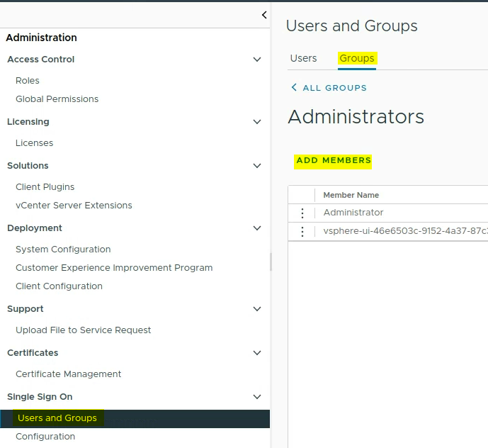
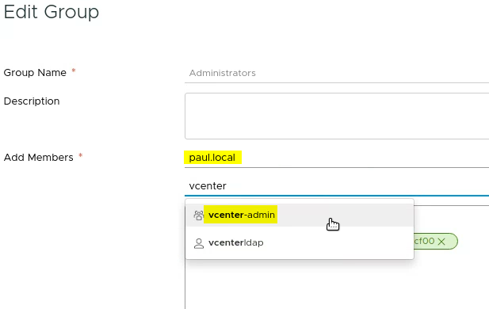
Milestone 4.2: Powershell, PowerCLI and Our First Clone
Xubuntu install powercli and ansible dependencies
Anisble
sudo apt install sshpass python3-paramiko git
sudo apt-add-repository ppa:ansible/ansible
sudo apt update
sudo apt install ansible
ansible --version
cat >> ~/.ansible.cfg << EOF
[defaults]
host_key_checking = false
EOFInstall Powercli and Powershell
sudo snap install powershell --classic
pwshWrite-Host $PSVersionTable
Install-Module VMware.PowerCLI -Scope CurrentUser
Get-Module VMware.PowerCLI -ListAvailable
Set-PowerCLIConfiguration -InvalidCertificateAction Ignore
Set-PowerCLIConfiguration -Scope User -ParticipateInCEIP $falseTest Connectivity to ESXi Host
Connect-VIServer -Server 192.168.7.32
Get-VM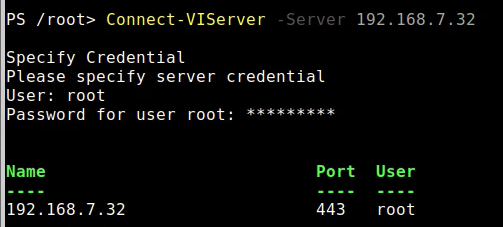
Or connect with domain user ($vcenter=”vcenter.paul.local”)
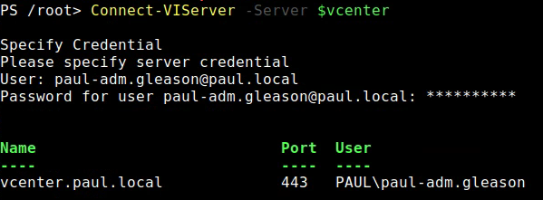
Show VM’s
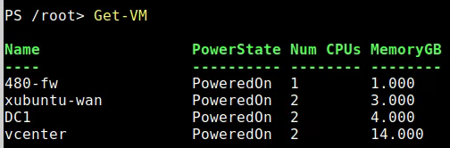
To get vm Snapshot
# select vm
$vm = Get-VM -Name DC1
# Get snapshot name
$snapshot = Get-Snapshot -VM $vm -Name “Base”
# Get vmhost
$vmhost = Get-VMHost -Name “192.168.7.32”
# Get Data Store
$ds = Get-Datastore -Name “datastore1-super20”
# The name of the vm replaces {0}
$linkedClone = “{0}.linked” -f $vm.name
# To create new linked clone
$linkedvm = New-VM -LinkedClone -Name $linkedClone -VM $vm -ReferenceSnapshot $snapshot -VMHost $vmhost -Datastore $ds
# Create full independent version from linked clone
$newvm = New-VM -Name “server.2019.gui.base” -VM $linkedvm -VMHost $vmhost -Datastore $ds
# Create snapshot of new vm
$newvm | New-Shapshot -Name “Base”
# Removed old link
$linkedvm | Remove-VMMade Script: https://github.com/ChampPG/Tech-Journals/blob/main/SEC-480/cloner.ps1
Milestone 4.3: Ubuntu Server Base VM and Linked Clone
Create a new Ubuntu VM.
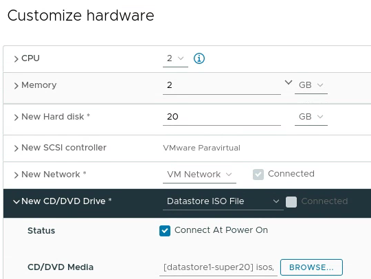
Update to the new installer
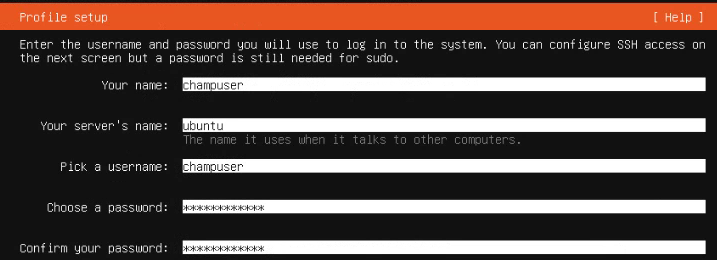
Install OpenSSH Server
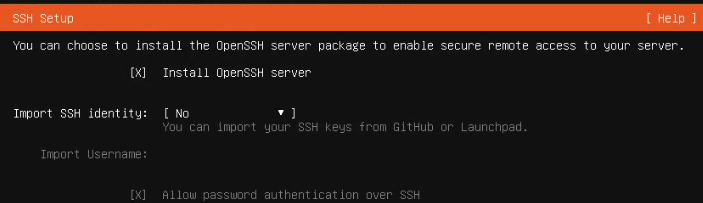
Disable IPv6
sudo sysctl -w net.ipv6.conf.all.disable_ipv6=1
sudo sysctl -w net.ipv6.conf.default.disable_ipv6=1
sudo sysctl -w net.ipv6.conf.lo.disable_ipv6=1Modify Script
#!/bin/sh
#script to prepare ubuntu desktop vm for cloning
apt-get update
apt-get upgrade -y
#open ssh
apt-get install -y open-vm-tools openssh-server
cat /dev/null > /var/log/wtmp
cat /dev/null > /var/log/lastlog
rm -rf /tmp/*
rm -rf /var/tmp/*
rm -f /etc/ssh/ssh_host*
rm -f /etc/udev/rules.d/70-persistent-net.rules
cat <<EOL | sudo tee /etc/rc.local
#!/bin/sh -e
test -f /etc/ssh/ssh_host_dsa_key || dpkg-reconfigure openssh-server
exit 0
EOL
# assumption is that the host is already named
#echo ubuntu > /etc/hostname
apt-get clean
history -c
history -w
chmod +x /etc/rc.local
systemctl stop apt-daily-upgrade.timer
systemctl disable apt-daily-upgrade.timer
systemctl stop apt-daily.timer
systemctl disable apt-daily.timer
sudo apt autoremove -y
#truncate the machine id to avoid duplicate dhcp
# Changed lines below
echo -n > /etc/machine-id
sudo rm /var/lib/dbus/machine-id
sudo ln -s /etc/machine-id /var/lib/dbus/machine-id
echo "remove git repo and then issue a shutdown - h now"Download and run script
wget https://raw.githubusercontent.com/ChampPG/Tech-Journals/main/SEC-480/ubuntu-server.sh
chmod +x ./ubuntu-server.sh
Sudo ./ubuntu-server.shShutdown and take `Base` Snapshot
Script to Create aux
###################
# cloneraux.ps1 #
# Paul Gleason #
###################
# Check if connected to server
$connectCheck = $global:defaultviserver | Select-Object Name -ExpandProperty Name
# if not connected prompt to connect
if ( $connectCheck -eq ""){
#Connect to vcenter
$vcenterdomain = Read-Host "Please enter domain for vcenter"
Connect-VISever -Server $vcenterdomain
}
# Show hosts
Write-Host "--VM Host--"
Get-VMHost | Select-Object Name -ExpandProperty Name
Write-Host "-----------"
$vmhostIP = Read-Host "Please enter VM Host IP you would like to use"
# Show VMs
Write-Host "--VMs--"
Get-VM | Select-Object Name -ExpandProperty Name
Write-Host "-------"
$vmname = Read-Host "Please enter VM that you would like to clone"
# Show VM Snapshots
Write-Host "--Snapshots--"
Get-Snapshot -VM $vmname | Select-Object Name -ExpandProperty Name
Write-Host "-------------"
$snapshotName = Read-Host "Enter Snapshot that you would like to clone"
# Show Datastores
Write-Host "--Datastores--"
Get-Datastore | Select-Object Name -ExpandProperty Name
Write-Host "--------------"
$dsName = Read-Host "Select Datastore you would like to use"
# Get Clone name
$cloneName = Read-Host "Enter the name for the clone"
# Get vmhost
$vmhost = Get-VMHost -Name $vmhostIP
# Get VM
$vm = Get-VM -Name $vmname
# Get snapshot name
$snapshot = Get-Snapshot -VM $vm -Name $snapshotName
# Get Data Store
$ds = Get-Datastore -Name $dsName
# The name of the vm replaces {0}
$linkedClone = $cloneName
# To create new linked clone
$linkedvm = New-VM -LinkedClone -Name $linkedClone -VM $vm -ReferenceSnapshot $snapshot -VMHost $vmhost -Datastore $ds
# Set Adapter
$linkedvm | Get-NetworkAdapter | Set-NetworkAdapter -NetworkName 480-WAN